졸업 후 진로

- 실버보건학과는 급증하는 고령화 사회에 대비하기 위해 그 수요가 폭발적으로 증가하는 보건복지 전문인력을 양성하는 것을 목표로 합니다.
- 따라서 사회복지학과 보건학의 학제간 융합전공을 통해 상호 학문의 시너지 효과를 높이고 학생들의 실무능력을 극대화 하는데 중점을 두고 있습니다.
- 아래와 같이 실버보건학과는 두 학문의 융합을 통해 선택의 폭을 넓이고 다양한 분야로 진출할 수 있습니다.
Siver track1(사회복지분야)
- 보건복지부 및 지방자치단체 사회복지 전담공무원
- 교정직공무원 및 보호관찰직 공무원
- 국민건강보험공단(요양직, 건강직), 근로복지공단, 국민연금공단, 장애인고용촉진공단 등 복지관련 공기업
- 종합사회복지관, 노인종합사회복지관, 대기업 사회공헌팀 및 각종 사회복지재단의 사회복지사
- 병원 의료사회사업실(의료사회복지사), 정신보건센터(정신보건사회복지사), 사회복귀시설의 사회복지사
- 고령친화산업 창업 및 운영을 통한 실버산업 전문가
- 실버타운 관리직 및 취업컨설팅 전문가
- 각종 사회복지시설(노인병원, 노인요양원, 실버타운, 장애인복지관, 부랑인시설 등)
- 대학원 진학, 외국 유학 등을 통한 교수직 및 연구소 취업
- 기타분야
Silver track2(보건분야)
- 보건복지부 및 지방자치단체 보건직공무원
- 보건복지부, 국민건강보험공단, 건강보험심사평가원, 질병관리본부, 국립암센터 등의 보건관련 공기업
- 노인병원 및 대학병원, 정신보건센터, 보건소, 종합병원의 원무팀, 보험팀, 생명보험 의료비 심사팀, 제약회사 마케팅팀, 의무부사관 및 3사관 의정장교 각종 건강관련기업, 실버타운의 보건교육사, 병원행정사 및 의료보험사
- 생명보험 의료비 심사팀, 제약회사 마케팅팀, 의무부사관 및 3사관 의정장교
- 고령친화산업 전문가
- 의약, 대체의약 및 건강 식품회사취업
- 대학원 진학, 외국 유학 등을 통한 교수직 및 연구소 취업
- 기타분야
2020
취업·진학 현황
| 취업분야 | 이름 | 취업처 |
|---|---|---|
| 보건 | 이○○ | 충남대학교 병원 |
| 이○○ | 린여성병원 | |
| 이○○ | 뉴고려병원 | |
| 이○○ | 미래지동물병원 | |
| 정○○ | 센트럴병원 | |
| 한○○ | 행복닥터스요양병원 | |
| 변○○ | 충남대학교병원 | |
| 조○○ | 서울 명지성모병원 | |
| 김○○ | 대전 제1노인전문병원 | |
| 황○○ | 유성 선병원 | |
| 신○○ | 서울성애병원 | |
| 복지 | 전○○ | 동구 행복한어르신복지관 |
| 양○○ | 금촌주간보호센터 | |
| 김○○ | 대전 복지재단 | |
| 감○○ | 대전 YMCA | |
| 김○○ | 대전 중구다문화가족지원센터 | |
| 길○○ | 우리어르신재활돌봄센터 | |
| 강○○ | 으뜸복지센터 | |
| 조○○ | 한마음의 집 | |
| 최○○ | 유등노인복지관 | |
| 송○○ | 선우치매센터 | |
| 박○○ | 행복이음주간보호센터 | |
| 양○○ | 보령시 건강가정다문화가족지원센터 | |
| 기타 | 우○○ | ㈜팔도 |
| 남○○ | 골프회사 | |
| 원○○ | 배재대학교 조교 | |
| 장○○ | ㈜동서기공 |
2019
취업·진학 현황
| 취업분야 | 이름 | 취업처 |
|---|---|---|
| 복지 | 김○○ | 꿈꾸는사회적협동조합 |
| 김○○ | 카톨릭사회사업회 | |
| 박○○ | 유성구노인복지관 | |
| 이○○ | 꿈꾸는지역아동센터 | |
| 이○○ | 금산돌봄센터 | |
| 이○○ | 주간보호센터(창업) | |
| 장○○ | 대전유성지역자활센터 | |
| 보건 | 김○○ | 위래명인한방병원 |
| 안○○ | 제일정형외과병원 | |
| 황○○ | 대전동구중독통합관리센터 | |
| 황○○ | 유성선병원국제검진센터 | |
| 나○○ | 연세대세브란스의료법인 | |
| 박○○ | 가톨릭성모의료법인 | |
| 오○○ | 양천구보건소 | |
| 김○○ | 대전광역시립 제1노인전문병원 | |
| 박○○ | 서울목동뽀빠이마취통증의학과 | |
| 진학자 | 이○○ | 연세대학교 사회복지대학원 석사과정 |
| 정○○ | 배재대학교 교육대학원 석사과정 | |
| 기타 | 권○○ | 가수원도서관 행정 |
| 김○○ | 개인택시회사협동조합관리직 | |
| 김○○ | ㈜안영전기공사 관리직 | |
| 황○○ | 배재대학교 행정직 | |
| 이○○ | ㈜프렌쥬 | |
| 이○○ | ㈜대한가스산업 | |
| 이○○ | 배재대학교 조교 | |
| 이○○ | 서울디지털대학교 행정 | |
| 김○○ | 배재대학교 한국어교육원 |
2018
취업·진학 현황
| 취업분야 | 이름 | 취업처 |
|---|---|---|
| 복지 | 김○○ | 주간보호센터 |
| 김○○ | 대전 YMCA | |
| 박○○ | 북부종합사회복지관 | |
| 송○○ | 굿네이버스 | |
| 윤○○ | 사회복지공동모금회 | |
| 이○○ | 건강가정다문화가족지원센터 | |
| 홍○○ | 대전장애인일자리본부 | |
| 오○○ | 유등노인복지관 | |
| 보건 | 김○○ | 서울병원 |
| 서○○ | 한국신약제약회사 | |
| 소○○ | 대청종합병원 | |
| 이○○ | 건양대학교병원 | |
| 이○○ | 현대미약성형외과 | |
| 박○○ | 달려라 병원 | |
| 진학자 | 임○○ | 연세대 원주의과대학 대학원 의학과 |
| 문○○ | 숭실대학교 사회복지대학원 | |
| 최○○ | 영남이공대학교 | |
| 기타 | 권○○ | 농협중앙회 |
| 김○○ | 창업 | |
| 오○○ | 배재대학교 조교 | |
| 이○○ | 배재대학교 조교 |
2017
취업·진학 현황
| 취업분야 | 이름 | 취업처 |
|---|---|---|
| 복지 | 김○○ | 가경노인복지관 |
| 김○○ | 정산사북중학교 학교사회사업실 | |
| 김○○ | 보건복지부지정 쉼터 어루르기 | |
| 김○○ | 중구지역자활센터 | |
| 송○○ | 대전인생이모작지원센터 | |
| 이○○ | 동구노인복지관 | |
| 이○○ | 안양시 나들이데이 케어센터 | |
| 이○○ | 도토리 한알공동생활가정 | |
| 이○○ | 네이쳐뷰어린이집 | |
| 조○○ | 초록우산어린이재단 | |
| 신○○ | 대덕구시니어클럽 | |
| 이○○ | 구립영등포노인복지센터 | |
| 박○○ | 우리노인복지센터 | |
| 보건 | 이○○ | 강동강희대학교 의과대학병원 응급실 원무팀 |
| 황○○ | 연세대학교 의과대학세브란스병원 원무팀 | |
| 이○○ | 대전가톨릭종합병원 원무팀 | |
| 양○○ | 영등포구 성애종합병원 원무팀 | |
| 박○○ | 청주 최병원 원무팀 | |
| 김○○ | C씨 검진센터 원무팀 | |
| 김○○ | 보나파트 요양병원 원무팀 | |
| 홍○○ | 대전한일병원(정신보건사회복지사 자격 수련원) | |
| 박○○ | 이화병원 | |
| 신○○ | 건양대학교 의과대학병원 원무과 | |
| 진학자 | 송○○ | 경희대학교 친고령특성화대학원 (전액장학금) |
| 유○○ | 경희대학교 친고령특성화대학원 (전액장학금) | |
| 조○○ | 경희대학교 친고령특성화대학원 (전액장학금) | |
| 김○○ | 숭실대학교 대학원 석사과정 | |
| 문○○ | 숭실대학교 대학원 석사과정 | |
| 기타 | 최○○ | 한국전자통신연구원(ETRI) 사업조정실 |
| 배○○ | 한국담배인삼공사(KT&G) 윤리경영실 |